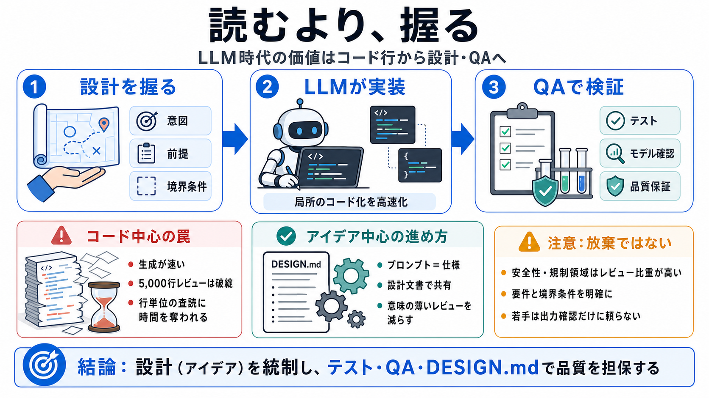

Which is correct: 'is' or 'are' with 'any of you'?
Hi, In a group where people ask English grammar questions, someone asked the following: "Which is correct: "...If any o…

読むより、握る
LLMがコード生成を速めるほど、開発の価値は「細部の追跡」から「設計・モデル・意図の統制」へ移ります。
増えるコード、減る時間
AIは大量のコードを短時間で出しますが、5,000行級の逐次レビューは現実的に回らなくなります。
街を作るのは設計
コードは建物ですが、AI時代は「地図（設計）」を握る側がボトルネックを減らします。
プロンプト＝仕様
AIに書かせる前に、プロンプトで設計（アイデア）を制御し、提案が正しいモデルに基づくかを確認します。
局所最適 vs 全体整合
LLMは関数ごと・行ごとの局所はうまい一方、全体の設計整合性や“大きい発想”は弱い、と作者は見立てます。
失敗の形は微妙
複雑で変化が速い領域では、実装のわずかな違いが性能や正確性に深刻に響くことがあります。
レビューを“減らす”
作者はレビューをゼロにしない一方、「意味の薄いレビュー」を減らし、設計改善とQAへ振り替えるべきだと述べます。
設計文書が橋になる
設計文書（例：DESIGN.md）でデータ構造・意図・トリックを“人間語”に整理すると、コードではなくアイデアを共有できます。
何に時間を使う？
8時間労働では“読む”が占有するとQAや最適化の思考が削れます。だから設計と検証へ寄せます。
“放棄”ではない
「コードを見ない」は完全な放棄ではなく、作者自身もRedisのようにレビューをしている、という前提があります。
適用はプロジェクト依存
安全性要件や規制、テスト基盤の強さによっては、レビューの比重が下がりにくい場合があります。設計中心でも「何を見ればよいか」は別途定義が必要です。
結論：統制して検証
LLM時代は「設計（アイデア）を握る」ことを中心にし、QA・テスト・検証で品質を担保するのが合理的です。
Hi, In a group where people ask English grammar questions, someone asked the following: "Which is correct: "...If any o…
Stack Exchange network consists of 184 Q&A communities including Stack Overflow, the largest, most trusted online commun…
In which case should I use “for you” or “to you?”
For: What’s the Difference? *To* and *for* are some of the most common prepositions in English—you see them everywhere, …
14 Phobias You Probably Haven't Heard Of. The Longest Long Words List. > _You’re_ is another way of writing two words: ‘…